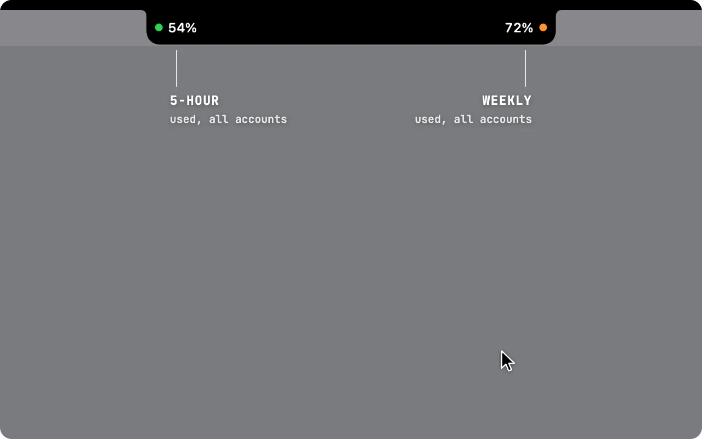
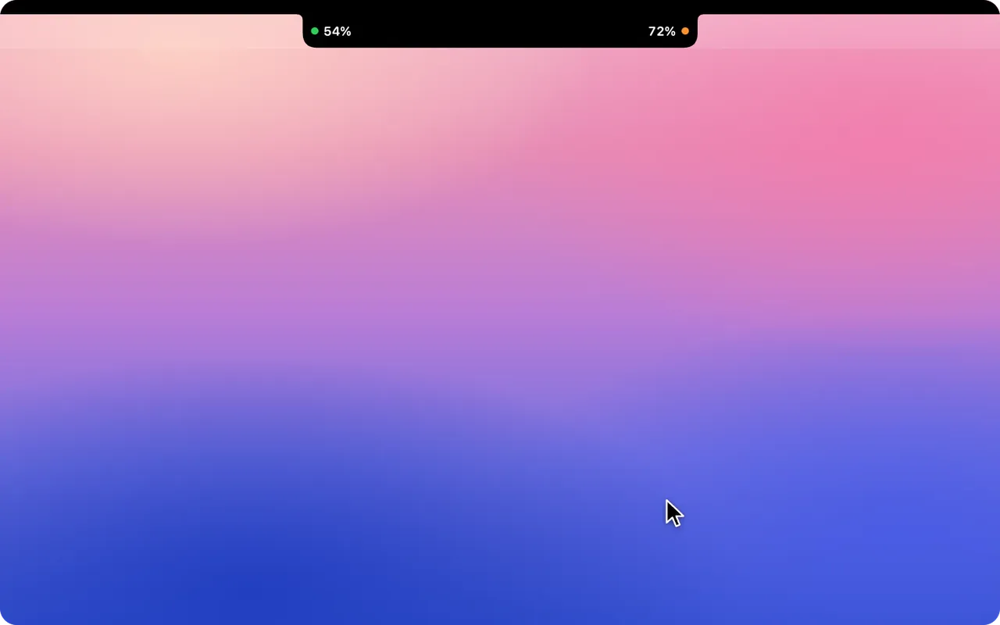
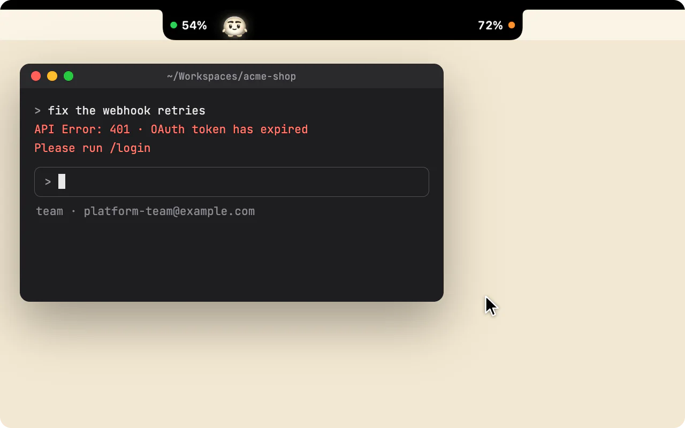
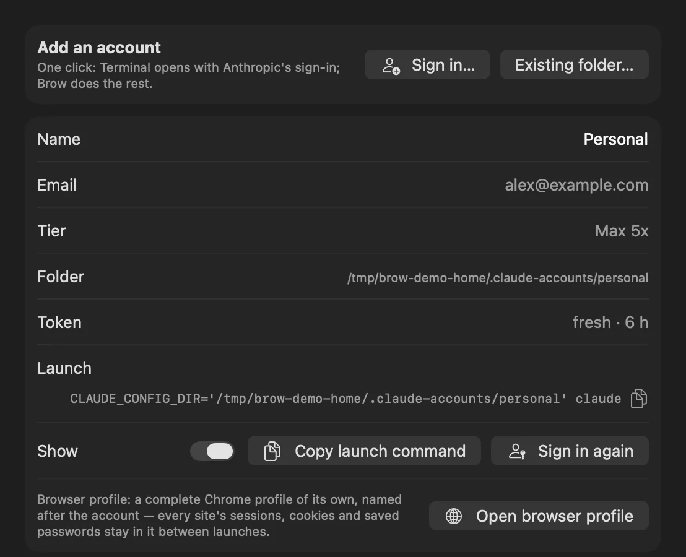

Лимиты Claude Code всех ваших аккаунтов — в чёлке MacBook
Brow — бесплатное приложение для macOS с открытым кодом. Для каждого аккаунта Claude Code он показывает 5-часовой лимит, недельный лимит и недельный лимит отдельной модели, если такой есть: сколько процентов израсходовано и когда каждый лимит сбросится. Работает с одним аккаунтом (сам находит ~/.claude) или с несколькими. Интерфейс приложения — на английском.
Скачать Brow Исходный код на GitHub
Или через Homebrew: brew install --cask efim0v/tap/brow

У какого аккаунта Claude ещё есть запас и когда сбросится каждый лимит
Если аккаунтов несколько, в Brow с одного взгляда видно, какой из них почти упёрся в лимит, где ещё есть запас и когда какой освободится.
Время сброса и календарь сбросов
У каждого лимита видно, когда он сбросится: если до сброса меньше суток, то обратным отсчётом («resets in 3 h 12 min»), а если больше — датой и временем («resets 22 Sep 02:00»).
В календаре отмечены недельные сбросы всех аккаунтов и примерные даты продления подписок. Наведите курсор на день, чтобы увидеть, что в этот день освободится.

Повторный вход в собственном профиле браузера аккаунта
Если у аккаунта истекла авторизация, достаточно одного клика рядом с ним: Brow запустит для этого аккаунта claude auth login и откроет его собственный профиль браузера, где вход в аккаунт уже выполнен. Остальные аккаунты остаются авторизованными.

Два числа у чёлки, на других дисплеях — капсула
В свёрнутом виде Brow показывает, сколько 5-часового и недельного лимита израсходовано в целом по вашим аккаунтам. Точка рядом с каждым числом становится оранжевой при 70 % и красной при 90 %. Наведите курсор — и откроется панель.
Показатели можно вынести и в полосу под чёлкой. На дисплее без чёлки Brow вместо них показывает капсулу.
Все аккаунты в настройках
В Settings → Accounts перечислены все аккаунты, у каждого — почта, тариф, папка, состояние токена и команда запуска. Кнопка Sign in… добавляет ещё один аккаунт: Brow создаёт папку и открывает штатный вход Anthropic в Терминале.

Что Brow делает для каждого аккаунта
- Все аккаунты перед глазами
- Для каждого аккаунта: 5-часовой лимит (5-hour limit), недельный лимит (weekly limit) и недельный лимит отдельной модели, если он есть, — сколько процентов израсходовано и сколько времени осталось до сброса каждого.
- Календарь сбросов
- Недельные сбросы и примерные даты продления подписок на сетке месяца: видно, какой аккаунт когда освободится.
- Команда запуска в буфер обмена
- Одна кнопка копирует команду, которая запускает Claude Code под этим аккаунтом.
- Повторный вход в собственном браузере аккаунта
- У каждого аккаунта отдельный профиль браузера со своими cookie, историей и сохранёнными логинами, поэтому вход в один аккаунт никак не мешает другому. Вторая кнопка открывает этот профиль напрямую.
- Новый аккаунт в один клик
- Brow создаёт папку аккаунта и запускает штатный вход Anthropic.
- Свежие токены
- Токены простаивающих аккаунтов обновляются в фоне, так что цифры не устаревают.
- Проверка каждые 30 секунд
- Brow проверяет лимиты каждые 30 секунд, а также после выхода Mac из сна, когда возвращается сеть, и при наведении курсора, если цифрам на экране больше 30 секунд. На панели видно, насколько они свежие.
Для отдельных профилей браузера нужен Google Chrome, Chromium, Brave или Edge. Если их нет, ссылки открываются в браузере по умолчанию, без изоляции. Подробнее о частоте запросов, обновлении и вариантах расположения — в документе «Brow в подробностях» (на английском).
Несколько аккаунтов Claude Code на одном Mac
Claude Code хранит каждый аккаунт в отдельной папке конфигурации: аккаунт по умолчанию — в ~/.claude, любой другой — в папке, на которую указывает CLAUDE_CONFIG_DIR. Именно так документация Anthropic предлагает оставаться авторизованным сразу в нескольких аккаунтах, например в рабочем и личном.
Brow читает ~/.claude и все папки в ~/.claude-accounts/. В Settings → Accounts кнопка Sign in… создаёт следующую свободную папку, ~/.claude-accounts/account-N, и запускает для неё claude auth login в Терминале, а Existing folder… добавляет папку, которой вы уже пользуетесь. После этого у каждого аккаунта есть кнопка, которая копирует его команду запуска, например CLAUDE_CONFIG_DIR='…' BROWSER='…' claude. С этой командой Claude Code стартует под нужным аккаунтом и открывает ссылки в его профиле браузера.
У каждой папки свои учётные данные. Claude Code хранит их в связке ключей macOS под именем, привязанным к папке: Claude Code-credentials для ~/.claude и Claude Code-credentials-<hash> для любой другой папки. Правила для ваших тарифов смотрите в Consumer Terms Anthropic.
Как посмотреть лимиты Claude Code: /usage, настройки, ccusage и Brow
Узнать расход и лимиты Claude Code можно несколькими способами. Первые три строки таблицы составлены по документации Anthropic, остальные — по сайту или README самого инструмента.
| Инструмент | Что показывает | Где находится | Несколько аккаунтов Claude сразу | Другие провайдеры | Платформы | Лицензия, цена |
|---|---|---|---|---|---|---|
/usage в Claude Code |
Шкалы расхода по тарифу для аккаунта, в который выполнен вход | Внутри Claude Code | Нет: только аккаунт, под которым запущена сессия | — | Везде, где работает Claude Code | Входит в Claude Code |
| Settings → Usage на claude.ai | Расход аккаунта, в который выполнен вход | Веб, Claude Desktop | Нет | — | Браузер, Claude Desktop | Входит в Claude |
rate_limits в строке состояния |
Сколько процентов 5-часового и 7-дневного лимитов израсходовано и когда они сбросятся — для вашего скрипта строки состояния; только Pro и Max | Строка состояния Claude Code | Нет: только аккаунт сессии | — | Везде, где работает Claude Code | Входит в Claude Code |
| ccusage | Расход токенов и примерная стоимость по локальным логам | Терминал | Не указано | Codex, OpenCode, Gemini CLI и другие | Не указано | MIT, бесплатно |
| Claude Code Usage Monitor | Монитор токенов, сообщений и стоимости в терминале, с прогнозами | Терминал | Просматривает несколько папок конфигурации; показ аккаунтов рядом друг с другом не описан | Не указано | Python 3.9+; команды установки для macOS, Linux и Windows | MIT, бесплатно |
| CodexBar | Окна лимитов, кредиты, расходы и сбросы по каждому провайдеру | Строка меню macOS, а также CLI и виджеты | Не указано | Много, в том числе Codex, Cursor и Gemini | macOS 14+; CLI также для Linux | MIT, бесплатно |
| Claude Tracker | Расход Claude за 5 часов, за неделю и по моделям; уведомления при достижении порогов | Строка меню, а также HUD у чёлки | Да, «все аккаунты сразу» | Не указано | macOS 14+, Apple silicon и Intel | MIT, бесплатно |
| Usage4Claude | Расход Claude и Codex за 5 часов и за неделю, extra usage; уведомления | Строка меню | Несколько аккаунтов, переключение из строки меню | Codex | macOS 13+, Intel и Apple silicon | MIT, бесплатно |
| ClaudeBar | Квоты многих ИИ-инструментов для программирования; уведомления при пороговых значениях и сбросах | Строка меню | Не указано | Много, в том числе Codex, Gemini и Copilot | macOS 15+ | Apache-2.0, бесплатно |
| Brow | Лимиты каждого аккаунта: 5-часовой, недельный и недельный лимит отдельной модели; время сброса; календарь сбросов; свой профиль браузера у каждого аккаунта | У чёлки MacBook; на других дисплеях — капсула | Да, рядом друг с другом | Только Claude | macOS 26+, Apple silicon | GPL-3.0, бесплатно |
Данные проверены . «Не указано» значит, что на собственной странице инструмента об этом не сказано. Claude Tracker — новое название Claude Usage Tracker.
- Нужны цифры прямо в Claude Code —
/usageили скрипт строки состояния на Pro и Max. - Нужны отчёты о токенах и стоимости — ccusage.
- Нужна панель в терминале с прогнозами — Claude Code Usage Monitor.
- Пользуетесь ещё Codex, Gemini или другими провайдерами — CodexBar или ClaudeBar.
- Нужны уведомления, Mac с процессором Intel или более старая macOS — Usage4Claude (macOS 13+) или Claude Tracker (macOS 14+).
- Нужно видеть у чёлки несколько аккаунтов Claude сразу, с календарём сбросов и отдельным профилем браузера для каждого — Brow.
Ограничения самого Brow: он работает только с Claude; ему нужна macOS 26 или новее, а готовая сборка есть только для Apple silicon; уведомлений он не присылает; сборка не нотаризована, поэтому при первом запуске придётся нажать Все равно открыть.
Установка Brow на Mac
-
Установите Brow
Через Homebrew:
brew install --cask efim0v/tap/browИли скачайте Brow.zip из последнего релиза, распакуйте его и перенесите
Brow.appв/Applications. -
Разрешите первый запуск
Сборка подписана ad hoc и не нотаризована Apple, поэтому macOS заблокирует первый запуск, каким бы способом вы ни установили Brow.
Откройте Системные настройки → Конфиденциальность и безопасность, найдите в разделе «Безопасность» сообщение о Brow, нажмите Все равно открыть и введите пароль для входа в систему. Кнопка остаётся там примерно час после заблокированного запуска.
-
Найдите Brow в чёлке
Значка в Dock у Brow нет: наведите курсор на чёлку, и откроется панель. Кнопка ⚙ на панели открывает настройки, а чтобы Brow запускался при входе в систему, включите Launch at login в Settings → General.
Если macOS не отдаёт Brow запись аккаунта из связки ключей, у этого аккаунта появляется оранжевый ключ. Нажмите на него и выберите Разрешать всегда.
Brow распространяется под лицензией GNU GPL v3; версии 0.2.0 и более ранние выходили под лицензией MIT. Исходный код, релизы и трекер задач — на GitHub.
Что Brow делает на вашем Mac
- Токен берётся из связки ключей
- Brow читает токен авторизации Claude Code каждого аккаунта из связки ключей macOS (Keychain) и использует его только для запросов к эндпоинтам Anthropic на
api.anthropic.com, которые отдают расход лимитов и данные профиля. Эти эндпоинты не входят в документированный публичный API и могут измениться. - Ни аналитики, ни проверки обновлений
- Токен не пишется на диск и не попадает в логи, а больше никуда ничего не отправляется.
- Запасное обновление токена включено по умолчанию
- Если обычное обновление перестаёт работать, Brow выполняет крошечный запрос
claude -p: он тратит немного лимита и запускает 5-часовое окно этого аккаунта. Отключается в Settings → Accounts. - Отдельный профиль браузера для каждого аккаунта
- Каждый профиль — отдельная папка в
~/Library/Application Support/Brow/browser-profiles/. Brow задаёт имя профиля и разрешает в нём сторонние cookie, чтобы работал вход. - Для входа открывается Терминал
- Вход запускает
claude auth loginв Терминале, и macOS один раз спросит, можно ли Brow управлять Терминалом. - Настройки и последние данные на диске
- Свои настройки и последние полученные данные о лимитах Brow хранит в
~/Library/Application Support/Brow. Кроме того, в файле~/Library/Application Support/Grove/oauth-usage-ledger.jsonон ведёт учёт частоты запросов к эндпоинту расхода и хранит последние данные каждого аккаунта. Этот путь задан в GroveCore — библиотеке, общей для Brow и Grove.
Brow — независимый инструмент. Anthropic не имеет к нему отношения и не одобряла его.
Частые вопросы о Brow и лимитах Claude Code
Как посмотреть лимиты Claude Code?
В Claude Code выполните /usage: подписчики Pro и Max увидят там шкалы расхода по своему тарифу. На claude.ai или в Claude Desktop откройте Settings → Usage. Оба способа показывают тот аккаунт, в который вы вошли. Brow показывает все аккаунты сразу: каждый лимит и время его сброса.
Когда сбрасывается недельный лимит Claude и в какой день?
Недельные лимиты сбрасываются раз в неделю, в обычные для аккаунта день и время. Ближайший сброс каждого аккаунта Brow показывает обратным отсчётом, если до него меньше суток, а иначе — датой и временем, например «resets 22 Sep 02:00». Календарь сбросов собирает недельные сбросы всех аккаунтов на одной сетке месяца.
Как работает 5-часовой лимит Claude?
На платных тарифах есть лимит на сессию, который сбрасывается каждые пять часов. Brow показывает, какую его часть израсходовал каждый аккаунт и сколько времени осталось до сброса.
Что значит «You’ve hit your session limit»?
Claude Code показывает это сообщение, когда аккаунт исчерпал лимит текущего окна. В сообщении сказано, когда окно сбросится, а переключение модели через /model доступ не вернёт. То же относится к сообщению «You’ve hit your weekly limit». Brow показывает, у какого из ваших других аккаунтов ещё есть запас, а команду, которая запускает Claude Code под этим аккаунтом, можно скопировать одним кликом.
Можно ли видеть лимиты нескольких аккаунтов Claude Code сразу?
Да. Brow читает ~/.claude и все папки в ~/.claude-accounts/ и показывает лимиты всех аккаунтов рядом друг с другом. Claude Code хранит каждый аккаунт в своей папке конфигурации, которая задаётся через CLAUDE_CONFIG_DIR; подробнее — в разделе «Несколько аккаунтов Claude Code на одном Mac» выше.
Тратит ли Brow мои лимиты?
Только через запасное обновление токена, и его можно отключить. Чтение лимитов — это запрос к эндпоинту Anthropic с данными о расходе, а не к модели. Токен простаивающего аккаунта Brow обновляет через claude doctor, который к модели тоже не обращается.
Запасное обновление включено по умолчанию. Когда токену осталось жить 30 минут или меньше, а claude doctor его не продлил, Brow выполняет запрос claude -p в один ход на Haiku. Это тратит крошечную долю лимита аккаунта и запускает его 5-часовое окно. Такой запрос уходит не чаще раза в 30 минут на аккаунт. Выключить запасное обновление можно в Settings → Accounts → Allow claude -p fallback.
Brow — это приложение для строки меню? Работает ли он без чёлки?
У Brow нет значка ни в строке меню, ни в Dock. Он находится вверху основного дисплея. На MacBook с чёлкой два показателя стоят по бокам от неё или в полосе под ней. На дисплее без чёлки, например на внешнем мониторе, Brow показывает капсулу вверху по центру.
Есть ли в Brow уведомления?
Нет. Точка рядом с каждым показателем становится оранжевой при 70 % и красной при 90 %.
Есть ли виджет для рабочего стола?
Нет. Brow живёт в чёлке, а на других дисплеях — в капсуле: наведите на неё курсор, чтобы открыть панель.
Как часто Brow обновляет цифры?
Он проверяет их каждые 30 секунд, а также после выхода из сна, когда возвращается сеть, и при наведении курсора, если цифрам на экране больше 30 секунд. Эндпоинт Anthropic с данными о расходе ограничивает частоту запросов, поэтому слишком ранняя проверка берёт последние полученные данные. На панели видно, насколько свежие цифры.
Brow бесплатный и с открытым кодом?
Да. Brow бесплатный, а его исходный код лежит на GitHub под лицензией GNU GPL v3. Версии 0.2.0 и более ранние выходили под лицензией MIT.
Откуда Brow берёт мой токен и уходит ли что-нибудь с моего Mac?
Из записи в связке ключей, которую Claude Code хранит для каждой папки аккаунта, или из файла .credentials.json в этой папке, если Claude Code хранит учётные данные в нём. Brow берёт только access-токен, а продлевать его оставляет самому Claude Code.
Собственные запросы Brow идут только к api.anthropic.com/api/oauth/usage и, примерно раз в день на аккаунт, к api.anthropic.com/api/oauth/profile. Ни аналитики, ни проверки обновлений в Brow нет. Команды claude, которые он запускает, ходят в сеть так же, как обычно ходит Claude Code, а профили браузера открывают claude.ai.
Чем Brow отличается от ccusage и /usage?
/usage показывает расход по тарифу для аккаунта, под которым запущена сессия. ccusage считает расход токенов и примерную стоимость по локальным логам. Brow показывает лимиты, которые сообщает Anthropic, для всех аккаунтов рядом друг с другом, вместе со временем сброса и календарём.
Истекла авторизация в Claude Code. Как войти в нужный аккаунт?
Если сохранённую авторизацию не удаётся обновить, Claude Code сообщает «Login expired · Please run /login». В Brow кнопка входа рядом с этим аккаунтом запускает для него claude auth login. При этом открывается профиль браузера, который принадлежит этому аккаунту, поэтому вход происходит именно в нужный аккаунт. Остальные аккаунты остаются авторизованными.
На каких Mac работает Brow?
macOS 26 или новее; готовая сборка — только для Apple silicon. Интерфейс вокруг чёлки рассчитан на MacBook, у которых она есть; на других дисплеях Brow показывает капсулу.
Brow — продукт Anthropic?
Нет. Автор Brow — Artem Efimov; Anthropic не имеет к приложению отношения и не одобряла его.
Brow подсказывает, у какого аккаунта есть запас. Grove переносит туда работу.
Grove выделяет каждой фиче проекта из нескольких репозиториев своё рабочее пространство для Claude Code и переносит сессию с одного аккаунта на другой. Каждое приложение работает и само по себе, но задуманы они как пара.
Grove — параллельные сессии Claude Code в нескольких репозиториях · Grove на GitHub